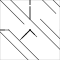
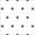

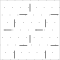

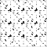


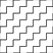
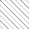


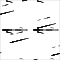
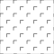


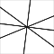
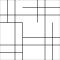
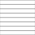


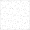
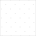

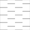


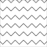
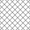


43 symbolen â hiërarchisch gegroepeerd op zoekfilter (V-/B-varianten genegeerd voor groepering)
| Niveau 1 | Niveau 2 | Niveau 3 | Niveau 4 | Symbool (bestand) | Afbeelding | Status |
|---|---|---|---|---|---|---|
| AGW | AGW-BAGGERVAK | AGW-BAGGERVAK-SO | | neutraal | ||
| AGW-GRONDSOORTEN | AGW-GRONDSOORTEN_AFVAL | AGW-GRONDSOORTEN_AFVAL-SO | | neutraal | ||
| AGW-GRONDSOORTEN_AFVAL-SOD |  | neutraal | ||||
| AGW-GRONDSOORTEN_BOMENGROND | AGW-GRONDSOORTEN_BOMENGROND-SO |  | neutraal | |||
| AGW-GRONDSOORTEN_BOMENGROND-SOD | | neutraal | ||||
| AGW-GRONDSOORTEN_BOMENZAND | AGW-GRONDSOORTEN_BOMENZAND-SO |  | neutraal | |||
| AGW-GRONDSOORTEN_BOMENZAND-SOD | | neutraal | ||||
| AGW-GRONDSOORTEN_GRIND | AGW-GRONDSOORTEN_GRIND-SO |  | neutraal | |||
| AGW-GRONDSOORTEN_GRIND-SOD | | neutraal | ||||
| AGW-GRONDSOORTEN_GROND | AGW-GRONDSOORTEN_GROND-SO | | neutraal | |||
| AGW-GRONDSOORTEN_GROND-SOD |  | neutraal | ||||
| AGW-GRONDSOORTEN_KERNMAT | AGW-GRONDSOORTEN_KERNMAT-SO |  | neutraal | |||
| AGW-GRONDSOORTEN_KERNMAT-SOD | | neutraal | ||||
| AGW-GRONDSOORTEN_KLEI | AGW-GRONDSOORTEN_KLEI-SO | | neutraal | |||
| AGW-GRONDSOORTEN_KLEI-SOD | | neutraal | ||||
| AGW-GRONDSOORTEN_SLIB | AGW-GRONDSOORTEN_SLIB-SO | | neutraal | |||
| AGW-GRONDSOORTEN_SLIB-SOD |  | neutraal | ||||
| AGW-GRONDSOORTEN_STAB | AGW-GRONDSOORTEN_STAB-SO |  | neutraal | |||
| AGW-GRONDSOORTEN_STAB-SOD | | neutraal | ||||
| AGW-GRONDSOORTEN_STEEN | AGW-GRONDSOORTEN_STEEN-SO | | neutraal | |||
| AGW-GRONDSOORTEN_STEEN-SOD | neutraal | |||||
| AGW-GRONDSOORTEN_TEELGR | AGW-GRONDSOORTEN_TEELGR-SO | | neutraal | |||
| AGW-GRONDSOORTEN_TEELGR-SOD | | neutraal | ||||
| AGW-GRONDSOORTEN_TEELGR_01 | AGW-GRONDSOORTEN_TEELGR_01-SO |  | neutraal | |||
| AGW-GRONDSOORTEN_TEELGR_02 | AGW-GRONDSOORTEN_TEELGR_02-SO |  | neutraal | |||
| AGW-GRONDSOORTEN_VEEN | AGW-GRONDSOORTEN_VEEN-SO |  | neutraal | |||
| AGW-GRONDSOORTEN_VEEN-SOD | | neutraal | ||||
| AGW-GRONDSOORTEN_ZAND | AGW-GRONDSOORTEN_ZAND-SO | | neutraal | |||
| AGW-GRONDSOORTEN_ZAND-SOD |  | neutraal | ||||
| AGW-GRONDSOORTEN_ZAND_BED | AGW-GRONDSOORTEN_ZAND_BED-SOD |  | neutraal | |||
| AGW-GRONDSOORTEN_ZAND_DRAIN | AGW-GRONDSOORTEN_ZAND_DRAIN-SOD | | neutraal | |||
| AGW-GRONDSOORTEN_ZAVEL | AGW-GRONDSOORTEN_ZAVEL-SO |  | neutraal | |||
| AGW-GRONDSOORTEN_ZAVEL-SOD | | neutraal | ||||
| AGW-GRONDWERK | AGW-GRONDWERK_AANVULLEN | AGW-GRONDWERK_AANVULLEN-SO | | neutraal | ||
| AGW-GRONDWERK_AANVULLEN-SOD | | neutraal | ||||
| AGW-GRONDWERK_FREZEN | AGW-GRONDWERK_FREZEN-SO | | neutraal | |||
| AGW-GRONDWERK_FREZEN-SOD | | neutraal | ||||
| AGW-GRONDWERK_FREZEN_DIEP | AGW-GRONDWERK_FREZEN_DIEP-SOD |  | neutraal | |||
| AGW-GRONDWERK_ONTGR | AGW-GRONDWERK_ONTGR_AANV | AGW-GRONDWERK_ONTGR_AANV-SO |  | neutraal | ||
| AGW-GRONDWERK_ONTGR_AANV-SOD | | neutraal | ||||
| AGW-GRONDWERK_ONTGRAVEN | AGW-GRONDWERK_ONTGRAVEN-SO | | neutraal | |||
| AGW-GRONDWERK_ONTGRAVEN-SOD | | neutraal | ||||
| AGW-NIETBAGGERVAK | AGW-NIETBAGGERVAK-SO | | neutraal |